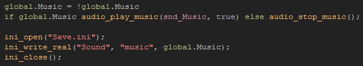
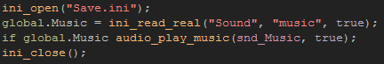
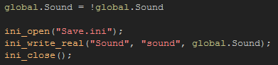
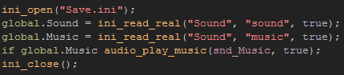

Tutorial
Page 4 of 11
Saving Button States
If you have run the "game" that is included with this tutorial, you will have seen that the first area has two buttons for toggling the sound effects and the game music. These buttons do nothing just now, but we
are going to change that!
To start with, let's go to the object called obj_Music_Button and open up the step event.
Here you can see that when the button is pressed, the graphic will be set to change but nothing else will happen, so let'sadd in the following code to the mouse_check_button_pressed code block:

The first part of the code will toggle the global controller variable between true or false, then the next line checks the value and starts or stops the music. After that we open the ini file and write the new value
for this global variable to the appropriate key in the "Sound" section of the ini. Finally, the ini file is closed. This is most important, as failure to close the ini file will cause errors later on in your game
if you try to open and read or write to it again, so you should always ensure that any ini_open() function is paired with its corresponding ini_close function.
Now, that's all we need to do for the button, but we also need the "game" to check this value when it starts and either play the music or not, so you now need to open the script called scr_Init_Globals
and change the line of code that sets the global Music variable to true for the following:

Again, here we open the ini file for reading, then set the global variable to the value found by the read function. Note that the read function has a default value (in this case true), and it is this
value that will be returned by the function if either the ini file doesn't exist in the bundle or save area, or the section or key being checked does not exist within the given file.
The next thing to do is repeat the same process for the obj_Sound_Button object.
Open it up, and add this code into the mouse_check_button_pressed code block:

And then we will expand the ini read section of the script scr_Init_Globals so that it covers not just the music but the sound effects, like this:

Run the game now and toggle the sound and music buttons a couple of times, but before closing make sure that they are switched OFF. Now run the game again and make sure that the state of these
buttons has been saved and there is still no sound, thus proving that the previous "state" of these buttons has been saved between different runs of the game.
Click on the Next button to go to the next page of the tutorial.